|
Hakan Cengiz, Makine Müh.
Proje Yöneticisi
Cadem
A.Þ.
Þubat 2006
Not: Orijinal olarak TurkCADCAM.net
Dergisi 2. Sayýsý için hazýrlanmýþ bu
makale, ilk kez Eylül 2007'de TurkCADCAM.net Portalý'ndan
yayýnlanmaya baþlamýþtýr.
Giriþ:
TurkCADCAM.net Dergisi'nin ilk sayýsýnda da birkaç noktada bahsi geçen TÜMOSAN 80 Serisi Traktör'ün, endüstriyel tasarýmýndan seri üretimine kadar olan süreci örnek alarak komple araç tasarýmýnda Cadem, ZuluDesign ve Atölye birlikteliðiyle gerçekleþen akýþý anlatmak istiyoruz.
Kardeþ firmalar olarak yapýlanan firmalardan ZuluDesign endüstriyel tasarým, Cadem mühendislik ve proje yönetimi, Atölye de prototip kalýp ve parça üretimini üstlenmektedir.
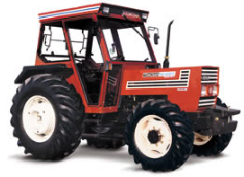Uzun yýllar otomotiv sektöründeki birçok ana ve yan sanayi firmasýyla yaptýðýmýz ortak çalýþmalar ve kurduðumuz saðlýklý ve karþýlýklý güvene dayalý iliþkilerimiz projelerimizde bize çok büyük avantajlar saðlamaktadýr. Sadece CATIA kullanýcýsý olmalarý nedeniyle yaklaþýk 150 adet firmayla satýþ, eðitim ve teknik destek kapsamýnda iliþkilerimiz vardýr. Bu firmalarýn yapabilirliklerini bilmemiz, farklý malzeme ve üretim sistemlerini tanýmamýz ve bu firmalarýn konularýndaki uzmanlýklarýný Co-Designer mantýðýnda kullanabiliyor olmamýz bize kalite, hýz ve esneklik saðlamaktadýr. Bu da bu projede bize yedi ayda prototip araç üretmemize ve dokuz ayda da seri üretime geçmemize olanak saðlamýþtýr.
TÜMOSAN 80 Serisi Traktör, Karsan Peugeut J9 Premier aracýndan sonra gerçekleþtirilen ikinci komple araç projemizdir. Þu anda da ayný firmanýn farklý motor seçeneklerine ait modellerindeki komple araç tasarým çalýþmalarýmýz devam etmektedir.
1976 yýlýndan beri Konya'da traktör ve motor üretimi yapan yýllýk 45 bin traktör kapasiteli TÜMOSAN (Türk Motor Sanayii - www.tumosan.com.tr) firmasý 2004'de özelleþtirilince Alçelik firmasý tarafýndan satýn alýndý ve firmanýn yeni sahipleri büyük bir atýlým hamlesi baþlattýlar. Bu çerçevede çýkarmak istedikleri yeni model traktörün tasarýmýnda bizimle çalýþmak istediklerini belirttiler. Biz de gerek firma sahiplerinin geniþ vizyon sahibi olmalarý ve gerekse de ilk defa Türkiye'de her þeyiyle (motor üretimi, araç tasarýmý vs.) bir Türk traktörü üretilecek olmasýnýn heyecanýyla projeye arzulu baþladýk.
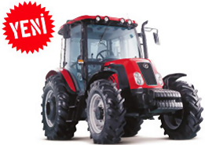
Konsept Çalýþmalarý:
Firma yetkilileriyle beraber yeni ürünün hedeflerini, rekabet kriterlerini belirliyor ve endüstriyel tasarým çalýþmalarýmýza bu deðerleri baz alarak baþlýyoruz. ATOS 3D optik tarama sistemini kullanarak 3D modeli olmayan traktörün ana gövdesini tarýyoruz. Böylelikle elimizdeki fiziksel araçtan, tersine mühendislik sistemlerini kullanarak 3D data elde ediyoruz. Daha sonra bu veriyi endüstriyel ve mühendislik tasarým çalýþmalarýmýzda fiziksel sýnýr þartlarýný belirlemek amacýyla kullanýyoruz.
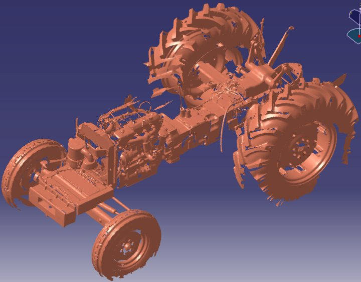
ATOS ile taranan traktör gövdesi
ZuluDesign, aracýn ana konsepti için deðiþik alternatifler hazýrlayarak müþterinin beðenisine sunuyor. Bu alternatifler, geometrik alternatifler olduðu kadar renksel alternatifler de içeriyor.
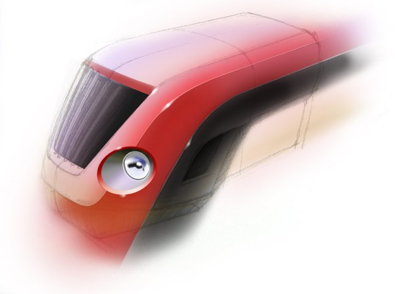
Ýlk eskizler...
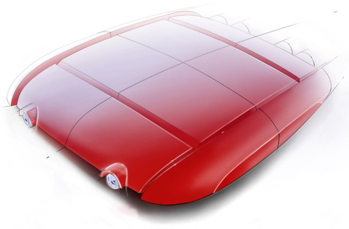
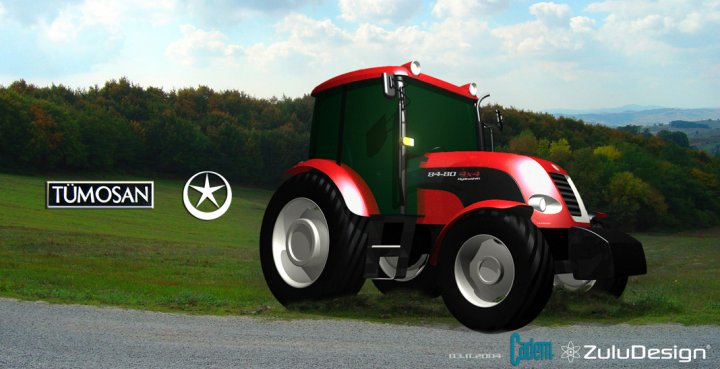
Ana konsept alternatifleri...
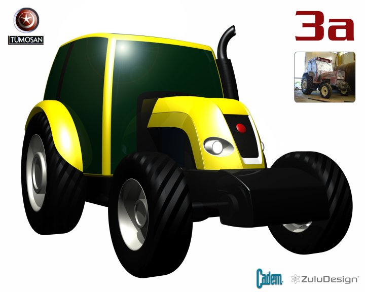
Ana konsept alternatifleri...
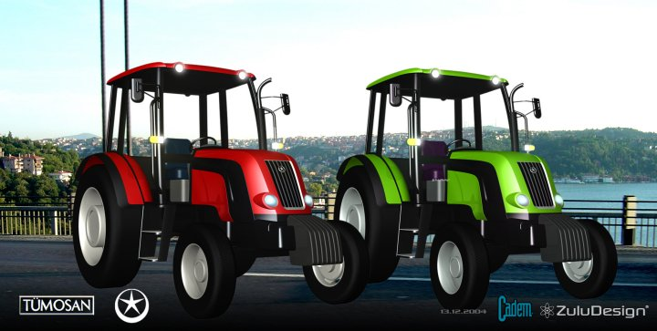
Ana konsept ve renk alternatifleri...
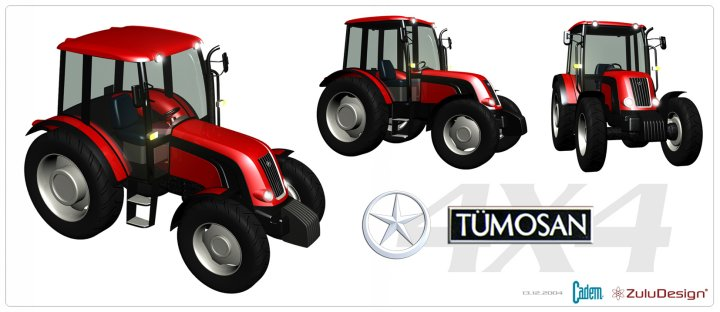
Karar verilen konsept...
Henüz ana konsept çalýþmalarýnda, ZuluDesign firmasýnýn tasarýmcýlarý, Cadem firmasýnýn mühendisleri, Atölye firmasýnýn kalýp uzmanlarý, ana parçalarýn üretici adayý firmalarla Cadem'in proje yönetimi kapsamýnda bir araya gelerek parçanýn kalýptan çýkmasýný, pahalý çözümlerden uzaklaþýlmasýný, öngörülen malzemenin ve üretim yönteminin tasarýma uygunluðunu garanti altýna alýyorlar. Bu eþzamanlý çalýþmayla beraber klasik proje çalýþmalarýnda sýkça görünen geri dönüþleri - dolayýsýyla zaman ve kaynak kaybýný - daha çalýþmanýn baþýnda büyük oranda engellemiþ oluyoruz.
Hazýrlanan alternatifler üzerinde yapýlan görüþmeler sonucunda ana konsept belirlenmiþ oluyor.
1/1 Ölçeðinde Köpük Model Hazýrlanmasý:
Müþterimizin kaðýt üzerinde veya bilgisayar ekranýnda görerek karar verdiði ana konseptin 1/1 ölçeðinde köpükten modelini hazýrlayarak gerçekte konseptin nasýl göründüðünü tam olarak sunuyoruz. Genel görüntüyü tama yakýn saðlayan bu köpük model üzerinde görüþerek son deðiþiklikleri de yapýyoruz....
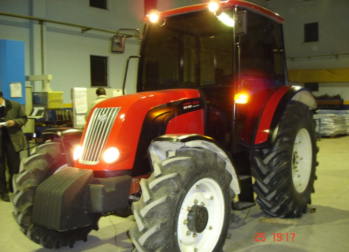
Komple aracýn 1/1 ölçeðinde köpük modeli.. Genelde kabin de köpükten iþleniyor.
Bu modelde kabin farklý çalýþýldý.
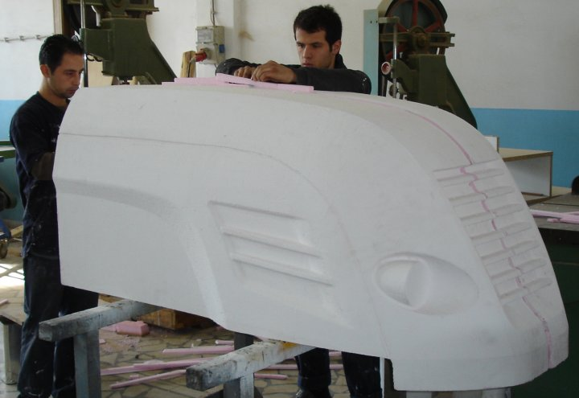
Parçalar CNC ile köpükten iþlenerek üzerinde ince iþlikler yapýlýyor ve boya iþleminden sonra istenen görüntü elde ediliyor. Üstte farklý ön kaput çalýþmalarý görülmektedir.
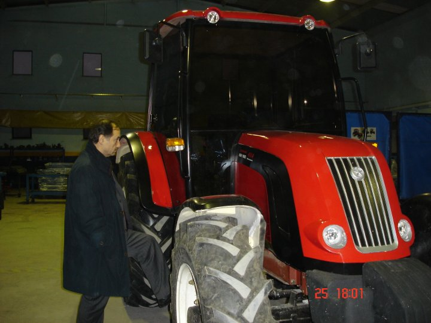
|